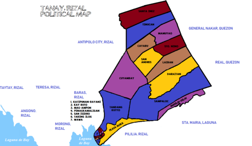

GEOGRAPHY

Tanay is situated in the province of Rizal, Philippines, and is known for its diverse geography. Nestled in the eastern part of Rizal, it is bordered by the Sierra Madre mountain range to the east, offering stunning landscapes and natural attractions. The municipality is characterized by rolling hills, lush forests, and the scenic Laguna de Bay to the west. The Sierra Madre serves as a natural boundary, providing Tanay with a rugged and picturesque terrain. Several rivers and streams traverse the area, contributing to the town's natural beauty. Notable landmarks include the Tinipak River and Cave, known for its pristine waters and unique rock formations. The municipality's elevation varies, ranging from low-lying areas near the lake to higher elevations in the mountainous regions. This diverse topography makes Tanay a hub for eco-tourism and outdoor activities, attracting visitors with its biodiversity and scenic landscapes.